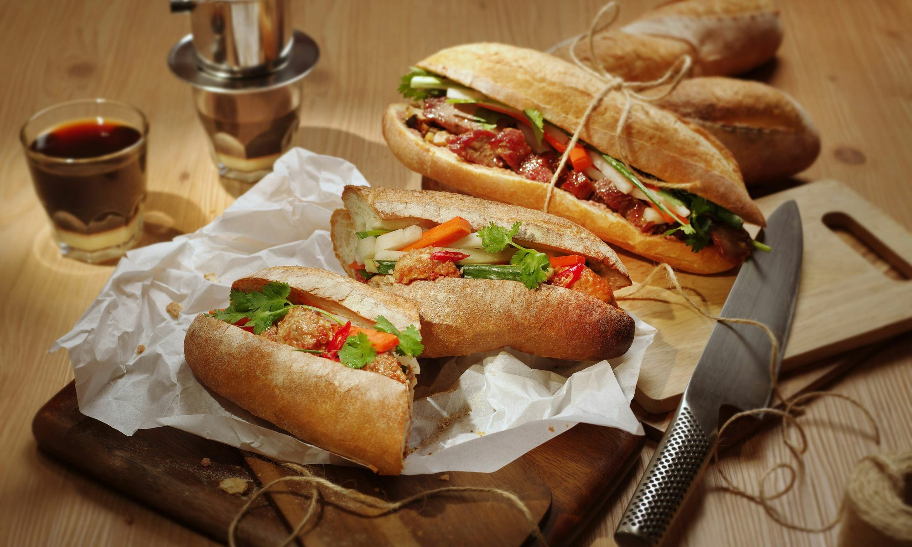
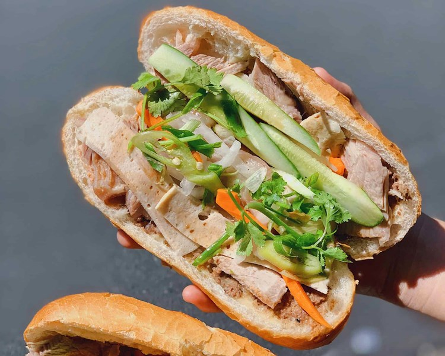

People love Banh Mi because it combines many different flavors and textures in one sandwich. The crispy baguette is filled with savory meat, fresh vegetables, and herbs, creating a balanced and delicious taste. It is also affordable, convenient, and commonly found as a popular street food in Vietnam. Check out our recipe.

